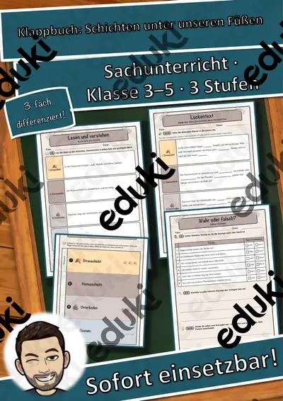
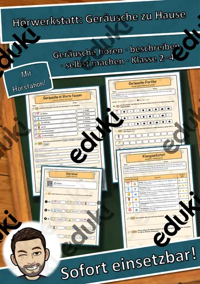
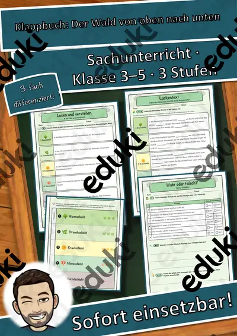
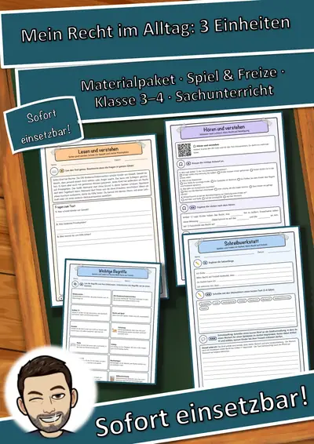
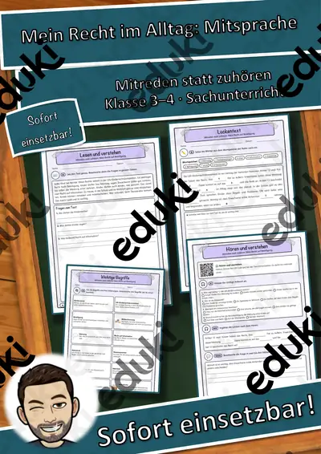
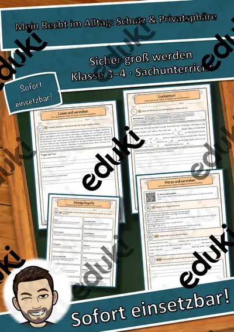
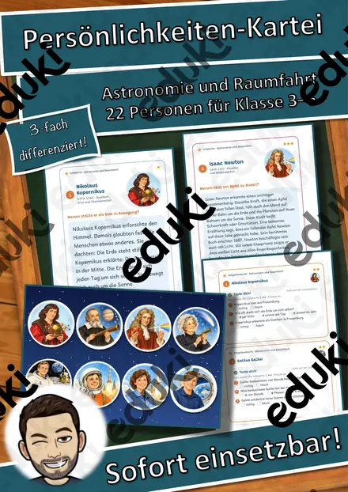

Gemüse - Merk es dir!
Mit diesem Material erhalten Sie das Gemüse Merk es dir! mit 15 verschiedenen Gemüsebildern (insgesamt 30 Karten). Viel Spaß beim Spielen! Über eine kleinen Beitrag für meine Kaffeekasse freue ich mich sehr: :) https://www.paypal.com/cgi-bin/webscr?cmd=_s-xclick&hosted_button_id=VQNS7ZDMJ83WY&source=url Danke!
FachSachunterricht
KlasseKl. 1–4
SchulformGrundschule
MaterialartSpiele
Ähnliche Materialien

Klappbuch-Werkstatt: Schichten unter unseren Füßen – Sachunterricht, 3 Stufen & Kurztest (Klasse 3–5)

Hörwerkstatt Geräusche: Geräusche zu Hause – Hörstation, 3 Stufen & Test (Klasse 2–4)

Klappbuch-Werkstatt: Der Wald von oben nach unten – Sachunterricht, 3 Stufen & Kurztest (Klasse 3–5)

Mein Recht im Alltag Materialpaket: 3 Einheiten – Alltag den Kinderrechten zuordnen und selbst reflektieren (Grundschule

Mein Recht im Alltag Mitreden statt zuhören: Mein Recht auf Beteiligung – Alltag den Kinderrechten zuordnen und selbst r

Mein Recht im Alltag Sicher groß werden: Schutz vor Gewalt und meine Privatsphäre – Alltag den Kinderrechten zuordnen un

Mein Recht im Alltag Spielen und Toben im Herbst: Mein Recht auf Freizeit – Alltag den Kinderrechten zuordnen und selbst
